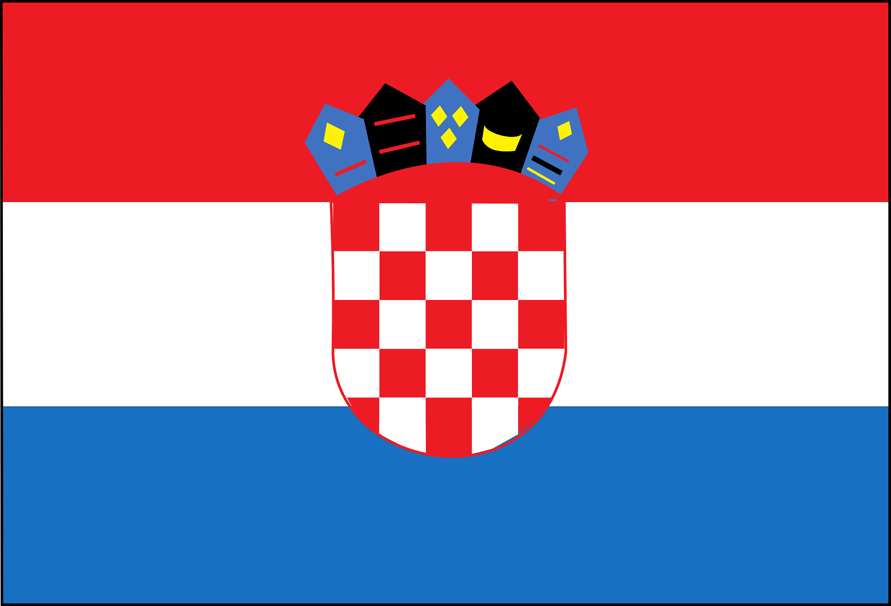

Kroatien – Perle der Adria
Kroatien liegt in Südosteuropa und hat eine lange Adriaküste.
Die Hauptstadt ist Zagreb.
Geografie und Klima
Küsten, Inseln und Gebirge prägen das Land.
Das Klima ist mediterran und kontinental.
Geschichte und Kultur
Historische Städte zeugen von römischem und venezianischem Einfluss.
Sprache und Regionen
Die Amtssprache ist Kroatisch.
Es gibt starke regionale Unterschiede.
Wirtschaft und Tourismus
Tourismus ist einer der wichtigsten Wirtschaftszweige.
Fazit
Kroatien ist bekannt für Natur, Meer und Geschichte.